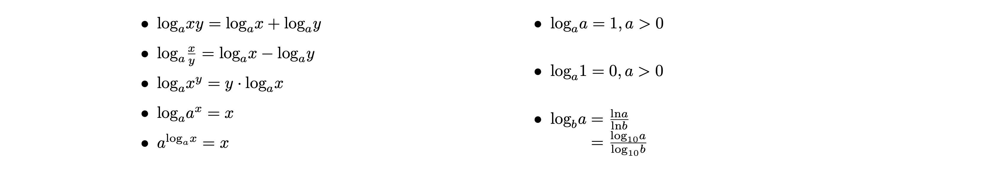
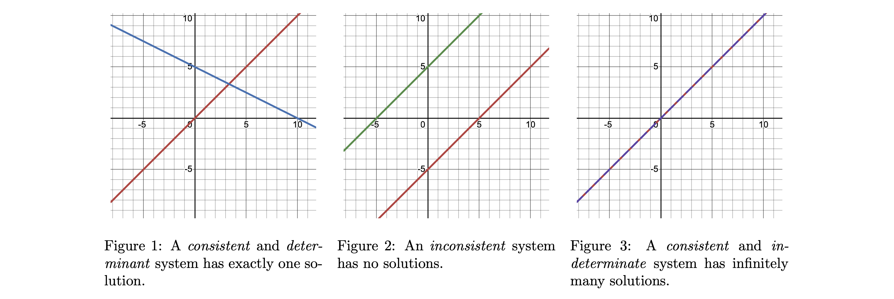
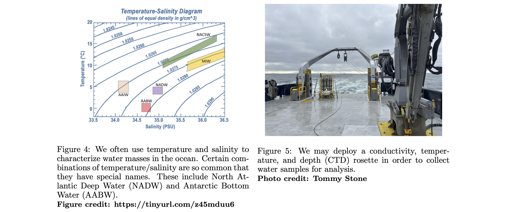

Algebra
Instructor: Caeli Griffin cagriffin@ucsd.edu (Keck 225)
TAs: Kathryn Chen & Lauren Harvey
See warm-up problems from lecture here.
1 | Introduction
This lecture is designed to provide incoming students with a quick refresher on basic algebraic problem-solving techniques. Topics to be covered are: order of operations, exponent and logarithm rules, the quadratic equation, and systems of equations.
Aside: If you notice any mistakes in these notes or have suggestions for improving their clarity, please let me know!
2 | Order of Operations
The order of operations helps us to unpack mathematical expressions, so that we can simplify arithmetic problems and solve algebraic equations. It tells you exactly what sequence in which to perform the necessary operations. A helpful mnemonic is `PEMDAS’:
P - Parentheses
E - Exponents
M - Multiplication
D - Division
A - Addition
S - Subtraction
To simplify an arithmetic expression using PEMDAS, complete the mathematical operations in the order described above. To simplify an algebraic equation, apply PEMDAS in reverse order. Note that the order in which the addition/subtraction operations are completed is often interchangeable. The same is true for multiplication/division. When in doubt, however, the rule is to work from left to right.
3 | Logarithms & Exponents \(^3\)
As a reminder, some of the key properties of logarithms and exponents are described below.
Exponents
Let \(a, b \in \mathbb{R}\) (’\(a\) and \(b\) are real numbers’), and \(m,n \in \mathbb{I}\) (’\(m\) and \(n\) are integers’). Then,
Logarithms
Now take \(a, b, x \in \mathbb{R}_+\) (’\(a, b\), and \(x\) are positive, real numbers’) and \(y \in \mathbb{R}\). By definition,
Aside: You can interpret the mathematical statement $:nbsphinx-math:text{log}_ax $ as being equivalent to the question: `:math:`a` to the power of what equals :math:`x`’?
Recall that \(a\) is the logarithmic base. Common bases include \(a = 10\),
and \(a = e\),
Rules for logarithms are summarized below.

4 | Quadratic Formula
The quadratic formula is a powerful tool for solving quadratic equations, which are polynomials of the following form:
where \(x\) is some unknown and \(a, b, c\) are constants.
Recall that polynomials always have the same number of solutions as the degree on the leading order term (i.e. the unknown variable with the largest exponent). This means that a quadratic equation has two solutions, called roots. These roots may be (1) real and distinct, (2) real and repeated, or (3) a pair of complex conjugates. We’ll stick to real solutions here.
The quadratic formula, then, is as follows:
where \(x_+\) and \(x_-\) are positive and negative roots, respectively.
To apply the quadratic formula, manipulate the given equation so that it looks like (2). Identify constants \(a, b, c\), and substitute into (3). Lastly, simplify as much as possible.
Aside: The quadratic formula will always solve a quadratic equation. However, there are sometimes more elegant approaches, like factoring or completing the square.
5 | Systems of Equations
A system of equations is a set of at least two equations, containing at least two unknowns, which are meant to be solved together.
It is possible for a system of equations to have either (1) exactly one solution, (2) no solutions, or (3) infinitely many solutions. Cases (1) and (3) describe a consistent system. Case (2) describes an inconsistent, meaning intractable, system. Graphical representations of all three cases are included below for a linear, 2×2 system:

In order to be tractable, it is necessary (but not sufficient!) that a system of equations contain at least as many constituent equations as unknown variables. When presented with a new system of equations, it’s often a good idea to check on this condition first—when it isn’t met, then a unique solution to the system does not exist!
Aside: The formal way of deciding which of the above three cases a system falls into requires calculating matrix determinants and applying Cramer’s Rule. We won’t cover Cramer’s Rule here, but it’s helpful to know that it exists.
EX Mixing Water Masses.\(^2\)
Imagine you’re taking shipboard measurements along an equatorial transect, and collect a water sample with a volume of \(1 \,\text{dm}^3\), temperature of \(1.97^\circ\) C and salinity of 34.83 psu. You know from previous profiles in the region that the sample is made up of two water masses: Antarctic Bottom Water (AABW) and North Atlantic Deep Water (NADW). You recall that AABW typically has temperature around \(-0.5^\circ\) C and salinity of approximately 34.67 psu. NADW usually has temperature of about \(3^\circ\) C and salinity near 34.9 psu.
Calculate the volume of each of the two water mass constituents.

Problem Set-Up
Conservation of tracer (i.e. salt) and energy (i.e. temperature) give the following equations:
From the problem statement, we also have
Notice that we have two unknowns (V1, V2) but three equations–our system is over-constrained! Proceed by choosing any two of our equations to solve for the unknowns. All choices should yield identical results, barring errors in our reported temperature, salinity, and/or volume values.
Aside: Additional solution methods include row reduction, Cramer’s Rule, and elimination of variables. The first two, row reduction and Cramer’s Rule require some linear algebra background. The third, elimination of variables, can be very tidy, but is only applicable under very specific circumstances.